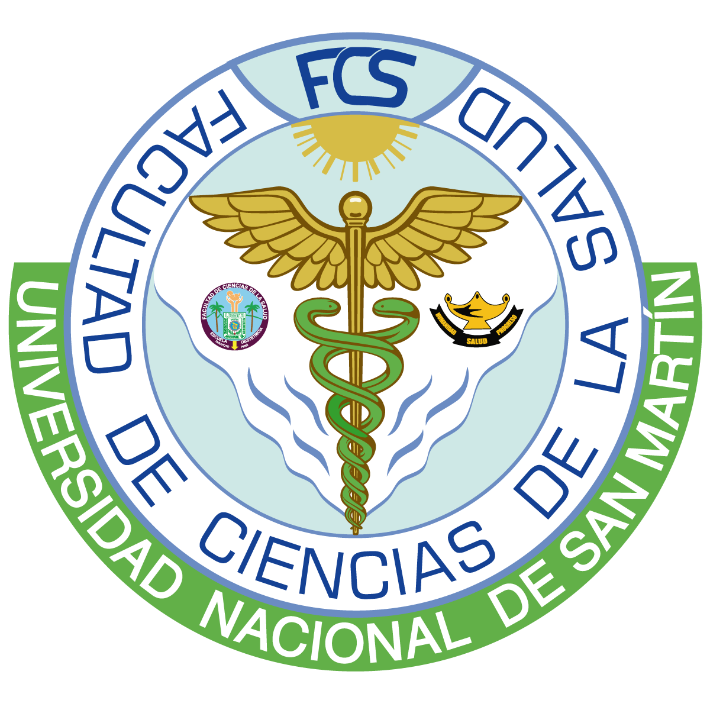

UNIVERSIDAD NACIONAL DE SAN MARTÍN
FACULTAD DE CIENCIAS DE LA SALUD

SEGUNDA ESPECIALIDAD EN SALUD REPRODUCTIVA CON MENCIÓN EN
PREVENCIÓN DE CÁNCER DE CUELLO UTERINO Y MAMA
OBJETIVOS
- Formar profesionales del área de la salud sexual y reproductiva con capacidades creativas e innovadoras orientados al desarrollo de la salud integral a la mujer, pareja y familia durante el periodo reproductivo, básicamente en salud reproductiva con énfasis en cáncer de cuello uterino y mamas, desarrollando intervenciones de comunicación y educación en salud para el cambio hacia comportamiento saludable, seguro y protegido.
- Fortalecer las capacidades en los participantes en la planificación, organización, ejecución y evaluación de actividades en salud reproductiva con énfasis en Cáncer de cuello uterino y mamas, incorporando estrategias que faciliten la participación de todos los actores sociales y políticos
COMPETENCIAS
- Desarrollo la acciones de promoción de la salud sexual y reproductiva en distintos escenarios, especialmente con las poblaciones vulnerables evaluando y controlando los procesos, resultados e impacto de las intervenciones realizadas en el campo de la salud.
- Diseña y propone modelos de intervención innovadores y pertinentes para la promoción y prevención del cáncer Ginecológico.
PLAN DE ESTUDIOS
| CICLO | ASIGNATURA | CRÉDITOS | DURACIÓN |
|---|---|---|---|
| I | Epidemiología del Cáncer Ginecológico y del cáncer de Mamas | 4 | 6 MESES |
| Anatomía y Fisiopatología del Aparato Genital Femenino | 4 | ||
| Anatomía y Fisiopatología de la Mama | 4 | ||
| Tesis I (Elaboración y aprobación del proyecto) | 3 | ||
| II | Genética del Cáncer | 5 | 6 MESES |
| Prevención del Cáncer Ginecológico, Clínica y Procedimiento de Diagnóstico | 4 | ||
| Tesis II ( Ejecución del proyecto) | 4 | ||
| Medicina Integrativa en Obstetricia | 5 | ||
| Rotación I: Práctica Especializada I | 3 | ||
| III | Prevención del Cáncer de Mama y Mamografía | 4 | 6 MESES |
| Patología Gineco-Obstétrica II | 4 | ||
| Tratamiento del Cáncer Ginecológico y de Mamas | 5 | ||
| Tesis III (Sustentación del informe final de la Tesis) | 5 | ||
| Rotación II: Práctica Especializada II | 5 |